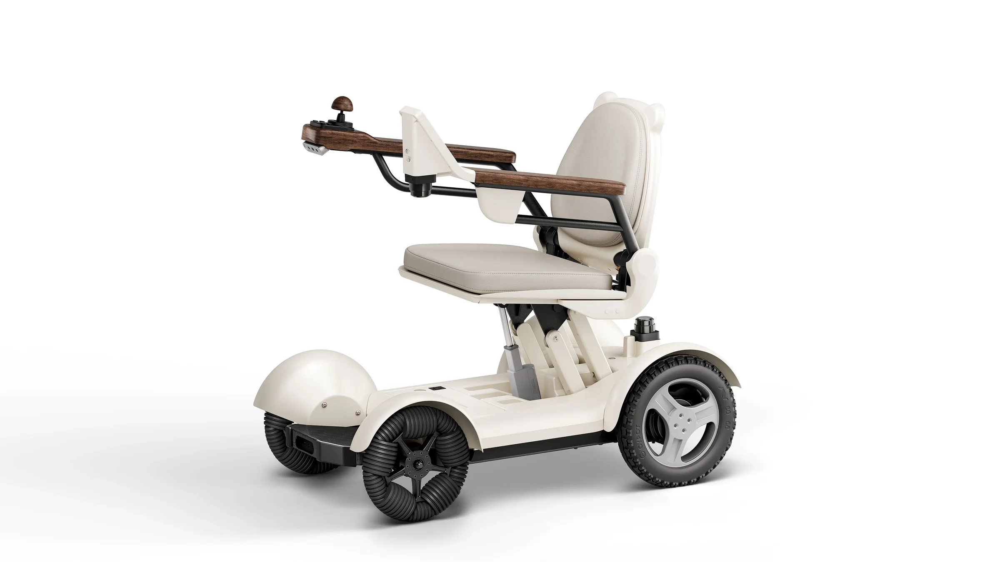
Buy
CIHANG
Foldable personal care robot. Drives itself, understands your voice without the internet, and folds in five seconds.
Version
Finish
- 5 sFolds in one touch.
- 360°Two LiDARs, two cameras.
- OfflineVoice AI on the chair itself.
- 25 kmOn a single charge.
One-touch folding
Five seconds. One touch.
Nothing to take apart.
Smart wheelchairs carry sensors and computers, and most of them have to come apart before they fit in a car or a closet. CIHANG folds as one piece. Seat, LiDAR, cameras, display and computers stay exactly where they are. Press once, and it drops from 880 mm to 510 mm.
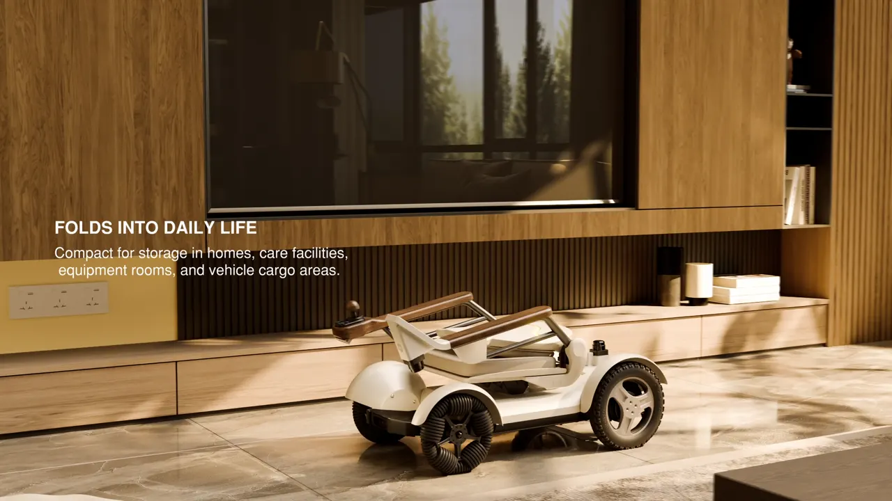
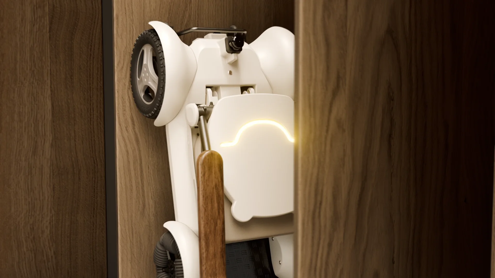
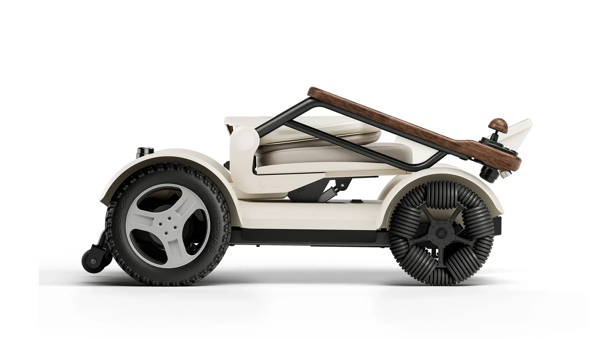
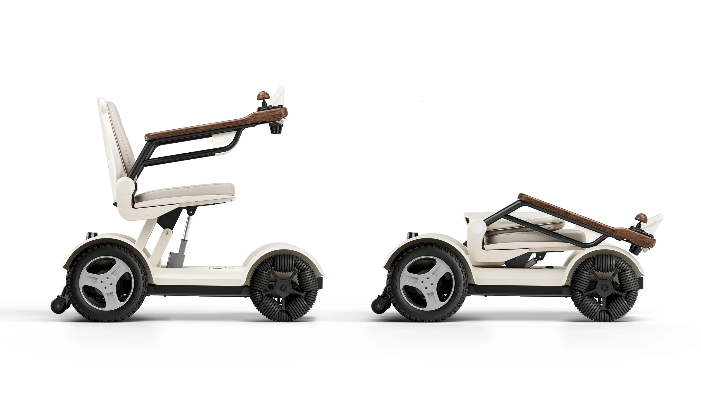
Designed for the living room
It looks like furniture.
That's the point.
Powered wheelchairs tend to arrive in black and white, with the machinery on show. CIHANG was co-designed with older adults to be something you would keep in the living room: a low, stable stance, rounded surfaces that wrap around the technical parts, warm low-saturation colors, and solid walnut where your hands rest.
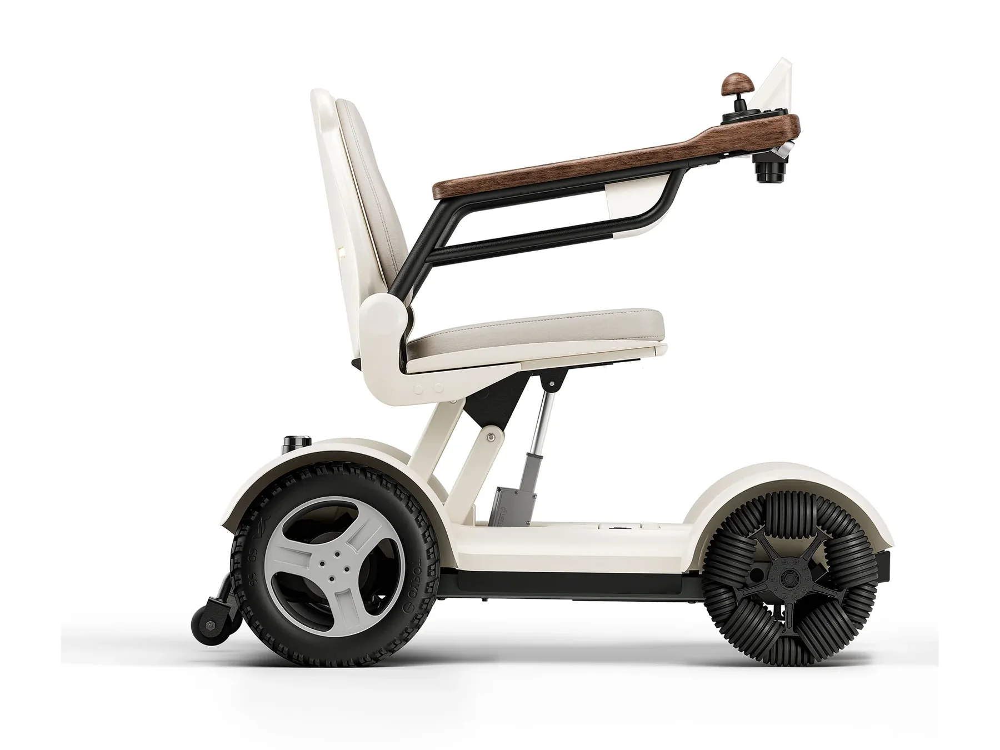
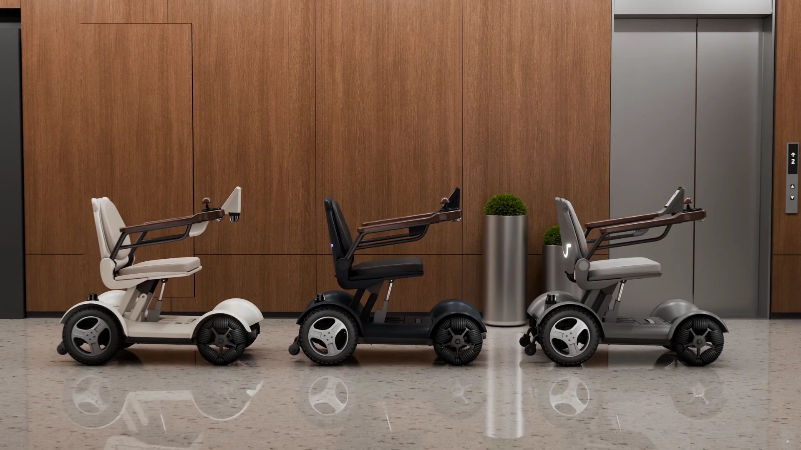
- Cream matte shellAluminum alloy, stainless steel and fiber-reinforced composite underneath.
- Solid walnut armrestsFlip up for easier transfers in and out.
- Soft-touch PU seatRemovable and washable.
- 5.7-inch displayDriving mode, speed, battery and alerts. Nothing else.
- IP54 enclosureWipe it down without a second thought.
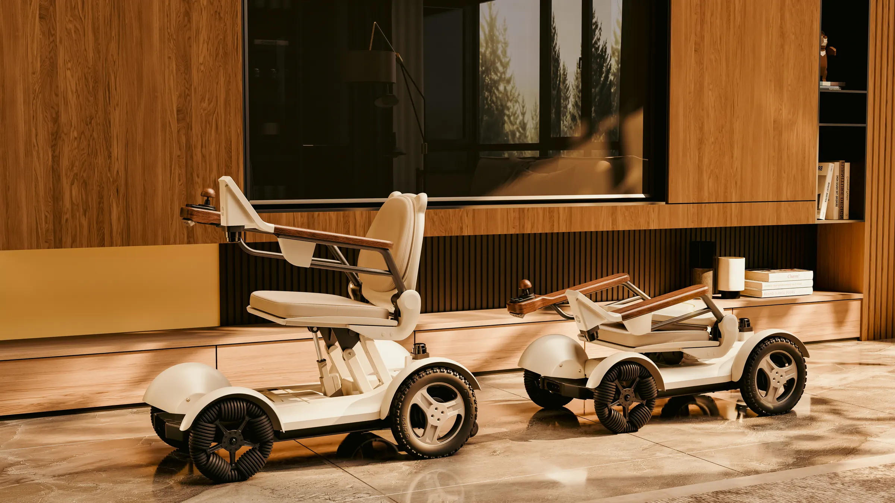
On-device voice AI
Just say where
you want to go.
CIHANG runs a language model on its own onboard computer. Your voice never leaves the chair, and it keeps working when the Wi-Fi doesn't. It understands more than 61 Chinese dialects, heavy accents and slower speech, so you talk to it the way you already talk.
Works offline
Speech recognition and the language model run locally. No cloud, no account, no waiting for a server.
Private by design
Nothing you say is uploaded. The microphone feeds the chair, not a data center.
61+ dialects
Built for regional dialects, varied accents and slower speech, and for people who change how they talk from day to day.
Still yours to drive
Voice sits alongside the joystick, touchscreen, gesture and app control. Use whichever is easier today.
Autonomous navigation
It maps your home
on the first drive.
Two LiDARs and two depth cameras scan every room, doorway and threshold as CIHANG moves, and build the map on the spot. From then on it plans its own route, steers around people, pets and furniture in real time, and returns to its dock when the battery runs low. Try it below: scroll to watch the first drive build the map, tap a room or tell the app where to go, or take the joystick and drive it yourself.
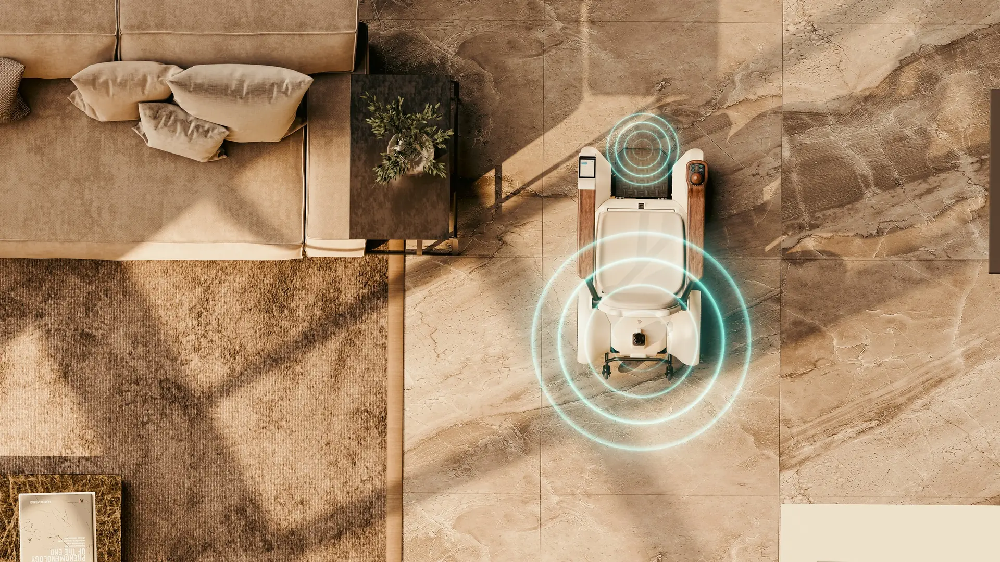
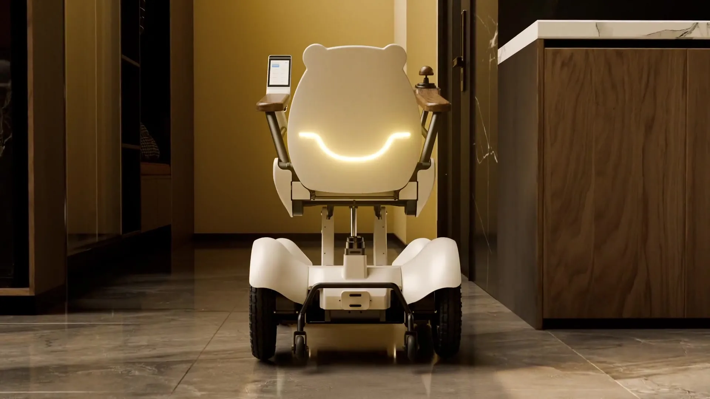
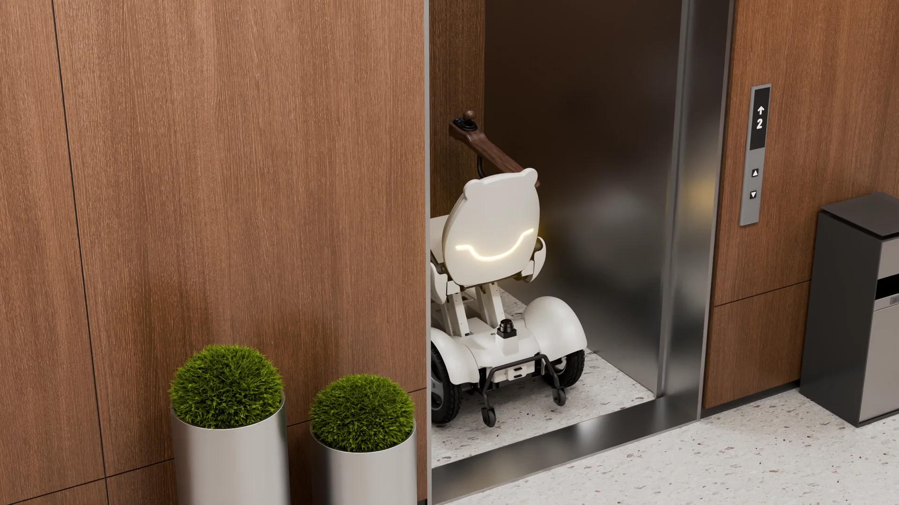
Perception & drive
Two LiDARs. Two cameras.
Two computers.
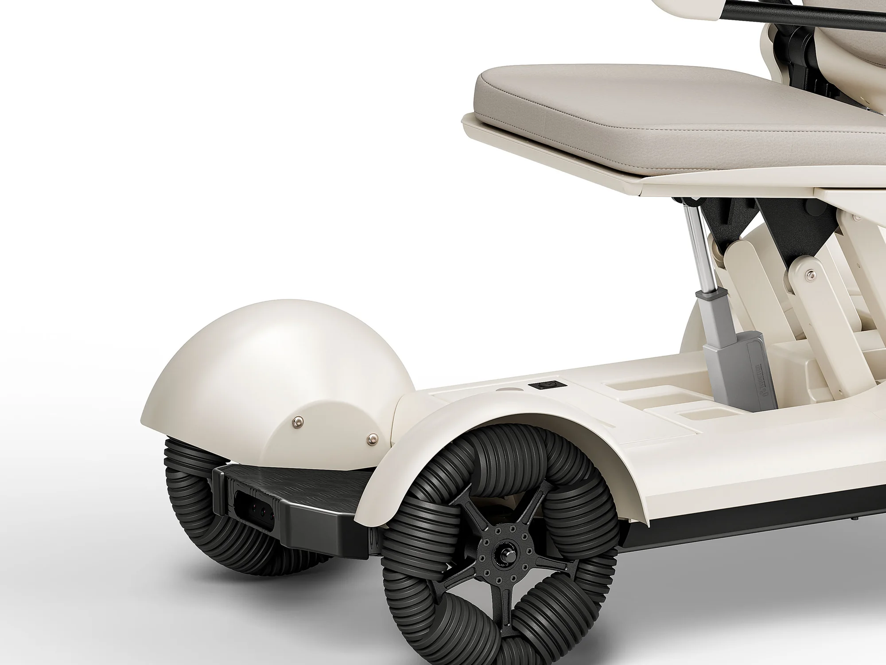
LiDAR + depth camera- Dual LiDAR
- 360° scanning from 0.05 to 30 m.
- Dual RGB-D cameras
- Depth and terrain data, fused with LiDAR.
- SLAM + ROS 2 Nav2
- Proprietary map optimization, localization and path planning. Obstacles handled in under 200 ms.
- Dual-system architecture
- One board runs perception, motion and safety in real time. A second runs the screen, voice and app.
- Redundant braking
- Electromagnetic and mechanical brakes. Let go of the joystick and it stops.
- Mecanum front wheels
- Rear differential drive with two 150 W brushless motors. Turns in place.
Five ways to drive.
- Joystick Let go and it stops.
- Touchscreen 5.7-inch. Mode, speed, battery.
- Voice On-device. 61+ dialects.
- Gesture Simple hand signals.
- App Send it, track it, share it.
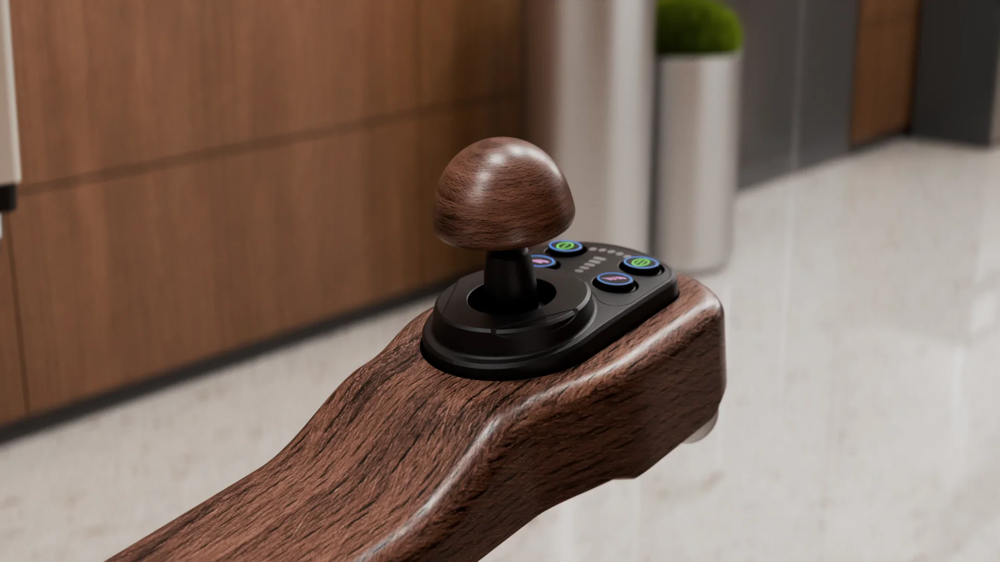
Who it’s for
Built for people who still
have places to be.
For anyone who finds walking hard for a while, or for good, and for the people who look after them. Four situations we designed around.
A day with CIHANG.
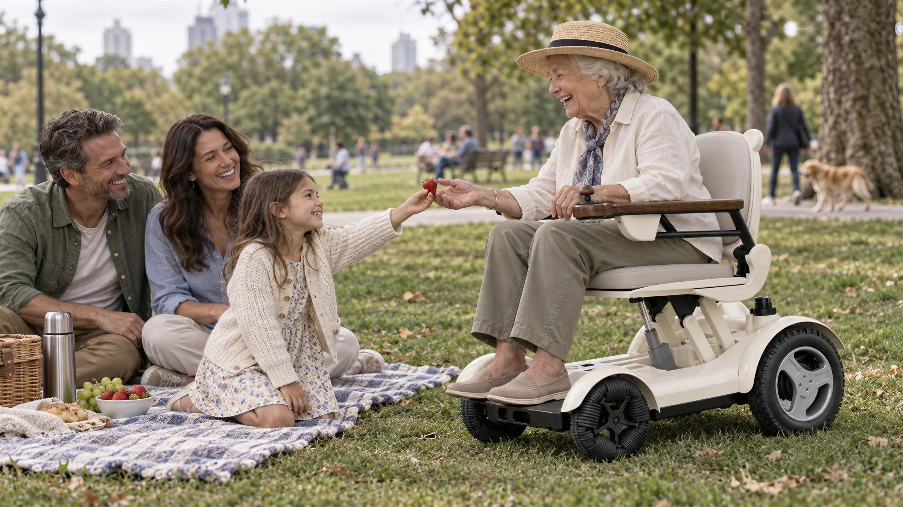
- “I’m thirsty.”To the kitchen. No hands on the joystick.Aging in place
- Doorbell.“Someone’s at the door” takes it to the entry.Living with limited mobility
- Out to the park.Folds in five seconds, into the trunk as one piece.Recovering
- “I’m tired.”Bedroom for a nap. The app shows the family it arrived.Caring from a distance
- Dinner.Dining table, then the sofa for the evening news.Aging in place
- Back to dock.Charges overnight. Ready by morning.Caring from a distance
And where one chair serves many.
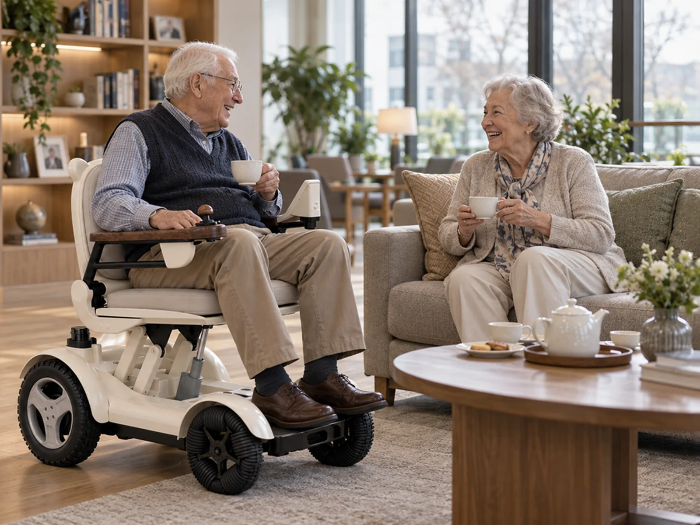
Tech specs
The numbers.
FAQ
Questions.
Does it need an internet connection?
No. Voice, navigation and mapping run on the chair's own computers. A connection adds app features such as remote monitoring, elevator calling and software updates.
How small does it get?
Folded, CIHANG is 510 mm tall, down from 880 mm. It stands in a wardrobe, lies flat in a car trunk and fits in equipment rooms and elevators without disassembly.
Can I still drive it myself?
Yes. Use the joystick, touchscreen, gestures or the app at any time. Release the joystick and the chair stops. Autonomous driving is a mode you switch into, never something forced on you.
Who is it for?
Older adults who want to keep living at home, people recovering from surgery or injury, long-term wheelchair users, and the families who support them. Care homes, hospitals and rental operators use the Shared version. See the four situations we designed around.
Is it certified?
CIHANG is registered as a Class II medical device with the NMPA and tested to GB/T 12996-2024 and GB/T 18029 / ISO 7176 for wheelchair safety, stability, braking, fatigue durability and EMC. Additional certifications include EU CE (MDR and RoHS), U.S. FDA 510(k) and FCC, Korea KC and MFDS, and UN38.3 battery transport testing.
How do I buy one?
The personal version is sold direct to consumers online. The shared version is available to institutions through WDC Robot.
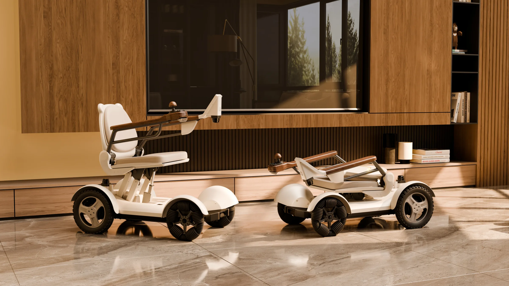